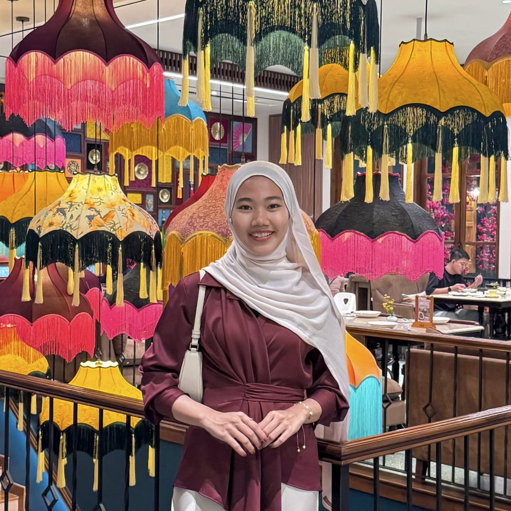

Halo, saya
Berpengalaman dalam operasional mesin dan kalibrasi, dengan fokus pada ketelitian, pengelolaan data, serta kepatuhan terhadap standar dan SOP.

Saya adalah mahasiswa Manajemen semester akhir dengan pengalaman 5 tahun di industri garmen, mencakup 1 tahun di bidang operasional mesin dan 4 tahun sebagai Staf Kalibrasi.
Berpengalaman memastikan kesesuaian kalibrasi mesin produksi dengan standar dan SOP yang berlaku.
Saya dikenal sebagai pribadi yang teliti, fokus, disiplin, dan bertanggung jawab, serta mampu bekerja secara konsisten untuk menjaga kualitas dan ketepatan proses kerja.
Monitoring dan memastikan kesesuaian kalibrasi mesin produksi.
Pengelolaan dan monitoring data secara teliti dan terstruktur.
Analisis proses operasional dan identifikasi kendala kerja.
Pengolahan data dan pembuatan dashboard untuk monitoring.
Pengalaman 4 Tahun
Memastikan kesesuaian kalibrasi mesin produksi dengan standar dan SOP yang berlaku.
Pengalaman 1 Tahun
Menjalankan proses operasional mesin produksi serta membantu memastikan proses kerja berjalan sesuai prosedur.
Program Sarjana • Semester Akhir
Universitas: Universitas Terbuka
2022 - 2027
Excel Dashboard untuk monitoring jadwal dan status kalibrasi mesin.
Lihat ProjectPerancangan checklist dan alur kerja kalibrasi yang lebih terstruktur.
Lihat ProjectAnalisis sederhana mengenai efisiensi dan kendala operasional mesin produksi.
Lihat ProjectPunya pertanyaan, ingin berdiskusi, atau ingin bekerja sama?
Email
dinifbrant02@gmail.com
GitHub
github.com/dinifbrant